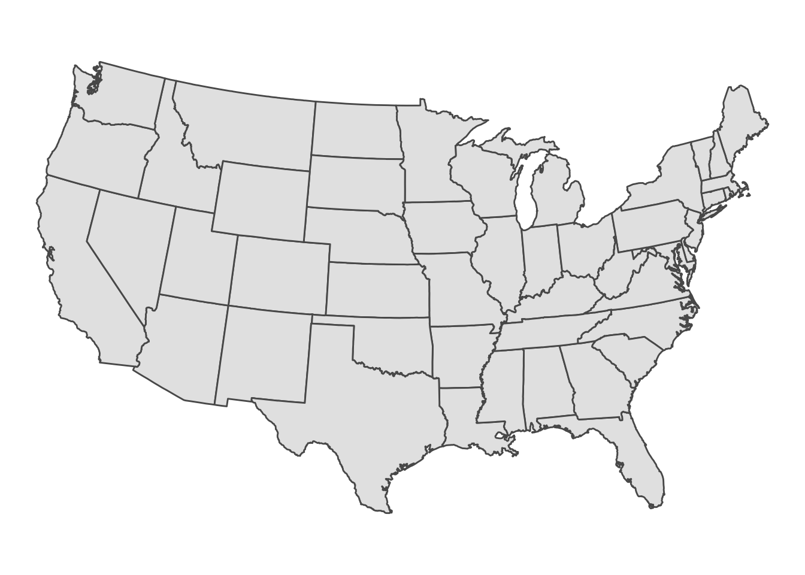
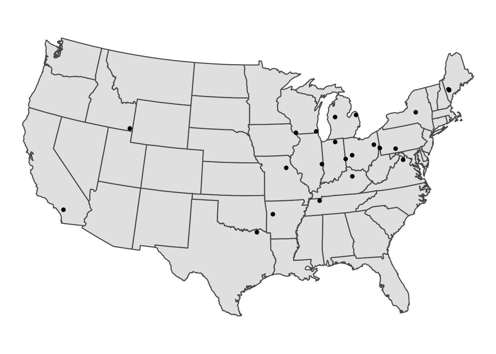
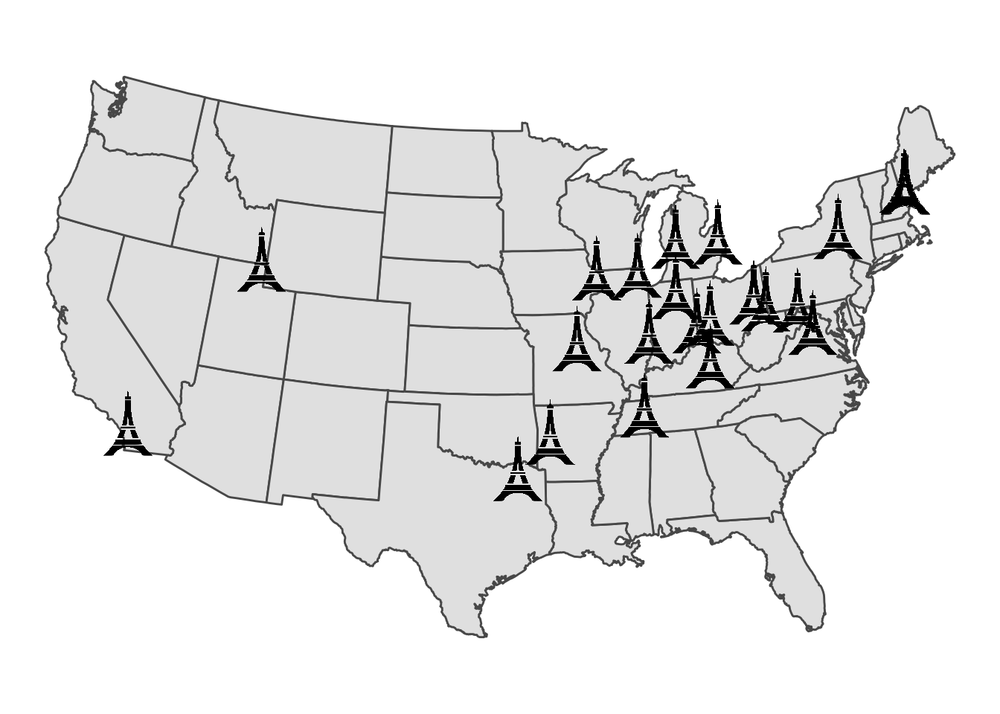
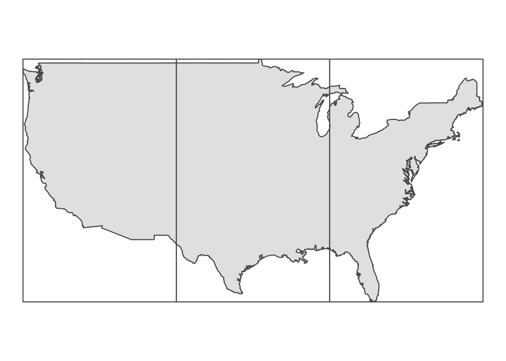
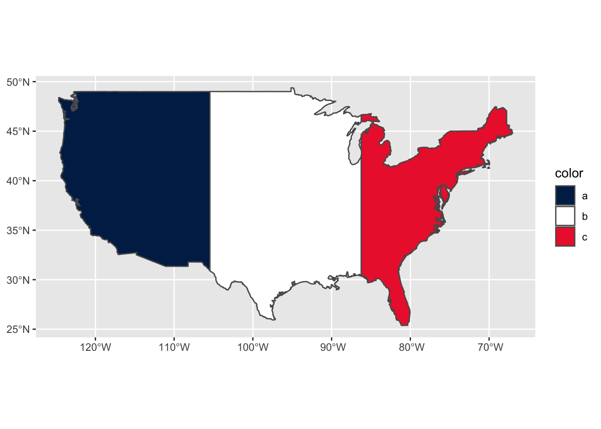
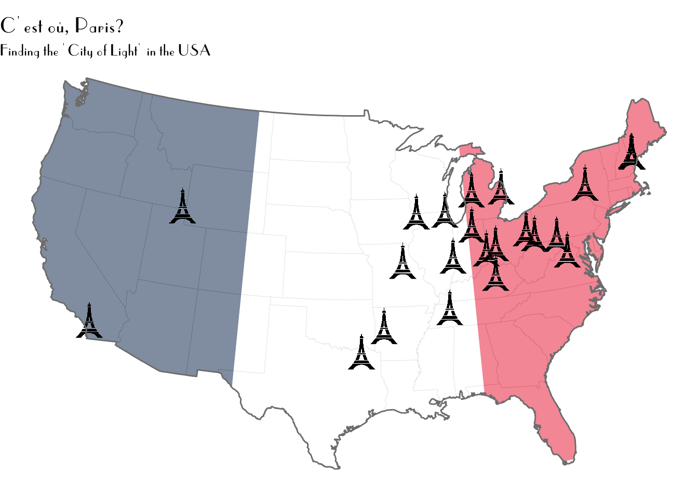

library(sf)
library(tmaptools) #to georeference city names
library(maps) #to download map of US
library(ggimage) #custom point markers
library(showtext) #for french-style font
library(ggplot2)
library(dplyr)C’est où, Paris?
Day 1 of the #30DayMapChallenge - Points
This is the start of the #30DayMappingChallenge. The first day’s topic is “points”. For this I’m going to mapping all the cities called Paris in the United States. This has a couple of steps:
- Georeference the cities to get their GPS coordinates
- Download a basemap of the outline of the US
- Map a make!
Here’s the packages we’ll use:
Georeference city names
First, we need to get the GPS coordinates from the city names. There are 23 cities with names closely approximating Paris in the US. We can find their coordinates using the geocode_OSM function from tmaptools which works with the OpenStreetMap API.
paris.cities <- c("Perris, California", "Paris, Idaho", "Paris, Texas",
"Paris, Arkansas", "Paris, Missouri", "Paris, Grant County, Wisconsin",
"Paris, Kenosha County, Wisconsin", "Paris, Illinois", "Paris, Tennessee",
"Paris, Kentucky", "New Paris, Ohio", "St. Paris, Ohio", "New Paris, Indiana",
"Paris, Michigan", "Paris Township, Michigan", "Paris, Ohio",
"Paris, Pennsylvania", "New Paris, Pennsylvania", "Paris, Virginia",
"Paris, New York", "South Paris, Maine", "Paris, Maine", "West Paris, Maine")
paris.geo <- geocode_OSM(q = paris.cities, details = FALSE, as.data.frame = TRUE)
#extract just the query and coordinates & turn into
#an sf object
paris.coords <- select(paris.geo, query, lat, lon) %>%
st_as_sf(coords = c("lon", "lat"), crs = 4326)Note that st_as_sf wants the coords in form of c(x,y) or c('lon', 'lat'). Remember lat = flat (y-axis).
Download a basemap of the US
I want an outline of the US to use a background or basemap for this map. There are lots of ways of downloading spatial polygons of the US in R, listed on this super helpful blogpost. I will use the maps package because it converts easily into an sf object. This specific call only returns the contiguous US.
usa.poly <- st_as_sf(maps::map("state", fill=TRUE, plot =FALSE))We can plot this to ensure it works using ggplot
ggplot(usa.poly) +
geom_sf() +
coord_sf(crs = 5070)+
theme_void()
I’ve done two small changes here. First, I update the coordinate system to Albers Conus/ NAD 83, which looks better for the US (IMO). I also use theme_void which drops all grid lines and axes, so all we see is the polygons.
Make a map!
We can then put this altogether into one map, using the defaults for now:
ggplot() +
geom_sf(data = usa.poly) +
geom_sf(data = paris.coords) +
coord_sf(crs = 5070) +
theme_void()
Set up custom point markers
The default point marker in ggplot is a circle, corresponding to shape 20. While you can easily change the shape to any other ready-made shapes in ggplot, I want to use a custom marker of the Eiffel tower. We can try to do this using the geom_image function from ggimage, but we will get an error because ggimage doesn’t work out of the box with sf objects:
ggplot() +
geom_sf(data = usa.poly) +
geom_image(data = paris.coords, image = "eiffel-tower.png") +
coord_sf(crs = 5070) +
theme_void()
#Error in `check_required_aesthetics()`:
#! geom_image requires the following missing aesthetics: x and ySo we will need to convert the coordinates into points with x and y coordinates, making sure they are using the same Albers CRS as the US background map:
paris.xy <- paris.coords %>%
#reproject
st_transform(crs = 5070) %>%
#get x and y coordinates
mutate(x = st_coordinates(.)[,1],
y = st_coordinates(.)[,2]) %>%
#drop sf geometry
st_drop_geometry()Now we can try to plot again:
ggplot() +
geom_sf(data = usa.poly) +
geom_image(data = paris.xy, aes(x = x, y = y), image = "eiffel-tower.png", size = 0.05) +
coord_sf(crs = 5070) +
theme_void()
Turn the US into a French flag
The map still feels like it is missing a certain je ne sais quoi, so I will turn the US background into a French flag to give it some flair. To do this, we’ll need to split the US into thirds that we will plot separately. We can split the US into grids using the st_make_grid function to create three evenly spaced grids. The n argument of the function allows us to specify that we want 3 columns and 1 row, and the function will split these into equal size:
#create outline of whole US, dropping shape outlines
#switch off s2 due to spherical errors
sf_use_s2(FALSE)Spherical geometry (s2) switched offus.outline <- st_union(usa.poly)
#turn s2 back on
sf_use_s2(TRUE)Spherical geometry (s2) switched onus.grid <- st_make_grid(us.outline, n = c(3,1))
ggplot() +
geom_sf(data = us.outline) +
geom_sf(data = us.grid, fill = NA) +
theme_void()
Next we will intersect this grid with the US polygon to create three US shaped polygons:
us.thirds <- as.data.frame(st_intersection(us.outline, us.grid)) %>%
#just make color factors
mutate(color = c(letters[1:3])) %>%
st_as_sf()
#palette of french flag
french_palette <- c("#002654", "#FFFFFF", "#ED2939")
ggplot(us.thirds) +
geom_sf(aes(fill = color)) +
scale_fill_manual(values = french_palette)
Then we can put it all together, adding some nice small formatting finishing touches. Some of this uses custom fonts via the showtext package, so may not be fully reproducible on your machine.
showtext_auto()
ggplot() +
geom_sf(data = usa.poly, fill = NA, size = 0.1, alpha = 0.4, color = "gray80") +
geom_sf(data = us.thirds, aes(fill = color), alpha = 0.5, size = 0) +
geom_image(data = paris.xy, aes(x = x, y = y), image = "eiffel-tower.png", size = 0.04) +
geom_sf(data = us.outline, color = "gray50", fill = NA) +
coord_sf(crs = 5070) +
scale_fill_manual(values = french_palette) +
guides(fill = 'none') +
theme_void() +
labs(title = "C'est où, Paris?",
subtitle = "Finding the 'City of Light' in the USA") +
theme(plot.title = element_text(family = "parisish", size = 16),
plot.subtitle = element_text(family = "parisish", size = 12))